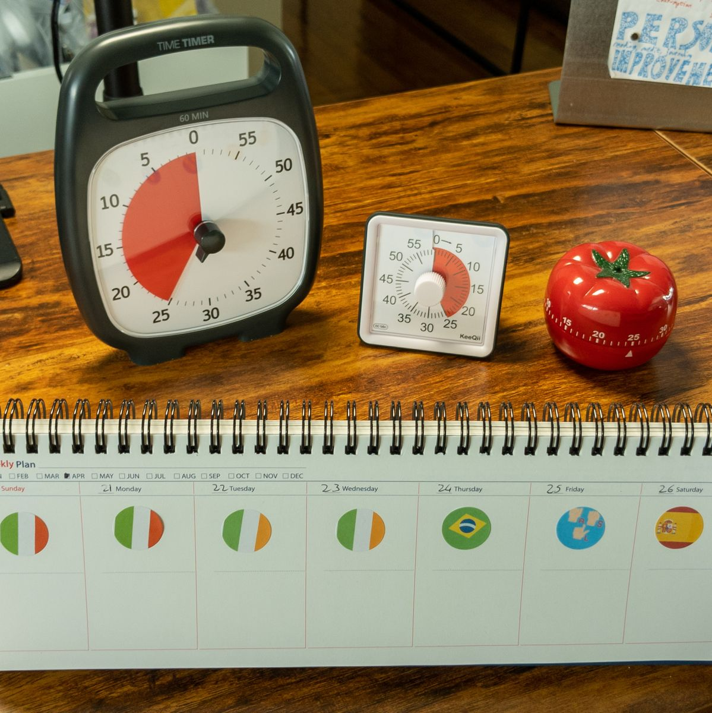

excited
excited

The internet does not need another Pomodoro timer. Seriously, there are thousands of them out there. Yet, here we are. I went ahead and built another one anyway.
Why? Because watching a digital tomato slowly tick down just wasn't giving me the psychological dopamine hit required to finish my assignments.
I wanted something that made sitting at my desk feel less like a corporate chore and more like playing a video game. I grew up on Pokémon, and like anyone else who has read Solo Leveling, I secretly just want a floating blue interface telling me I gained experience points after doing basic tasks.
So, I built FocusPilot — a gamified productivity system designed to turn real-life study blocks into an RPG progression experience.
The Solo Leveling Mechanics
Instead of just checking items off a boring to-do list, FocusPilot lets you level up a pixel-art pilot mascot. The app tracks five core stats:
- Strength
- Skills
- Intelligence
- Vitality
- Senses
These stats grow based on the specific categories of the tasks you complete. Spend an hour grinding out clean backend code, and your Intelligence and Skills will flash with an animated stat gain on your dashboard.
To keep you honest and prevent you from gaming the system, the experience point rewards scale up the longer you stay locked in. You get 25 XP for your first cycle, but that ramps up incrementally all the way to 100 XP if you maintain a strict focus streak.
Engineering Around Friction
There is nothing worse than an app that breaks your flow. Most web-based timers reset if you accidentally close the tab or look away to change a song. To fix this, I engineered a background timer system that maintains accurate session states across navigation, full page reloads, and app changes.
I also added a live countdown bubble directly on the home screen, giving you a quick visual indicator of your active session without forcing you to keep the main timer view open.
To complete the feedback loop, I built a custom Reward Shop. You earn points from finishing focus sessions, which you can then redeem for real-life treats. Want a premium coffee or an hour of video games? You have to earn the point cost first. When you finally hit redeem, the screen triggers a literal confetti burst. It is childish, absolutely, but it works. During evaluation sessions, users actually reported a 40 to 50 minute improvement in their daily focus duration.
Under the Hood
Architecturally, I wanted this to be fast, lightweight, and completely private.
- Frontend: Built with React 19, TypeScript, and Vite for a lightning-fast build pipeline.
- State Management: Handled entirely via Zustand using local storage persistence. Your character stats, session history, and notes never touch a third-party server — they live entirely on your machine.
- Audio: Instead of loading heavy MP3 files for system alerts, I used the Web Audio API to procedurally generate chiptune blips, giving it a tactile, retro handheld feel.
Is it a revolutionary concept? Maybe not. But it is a fast, dependency-light single-page application that turned my study environment into a sandbox game. The project is completely open-source, so if you want to clone the repository or level up your own real-world stats, you can jump right into the Live Demo.